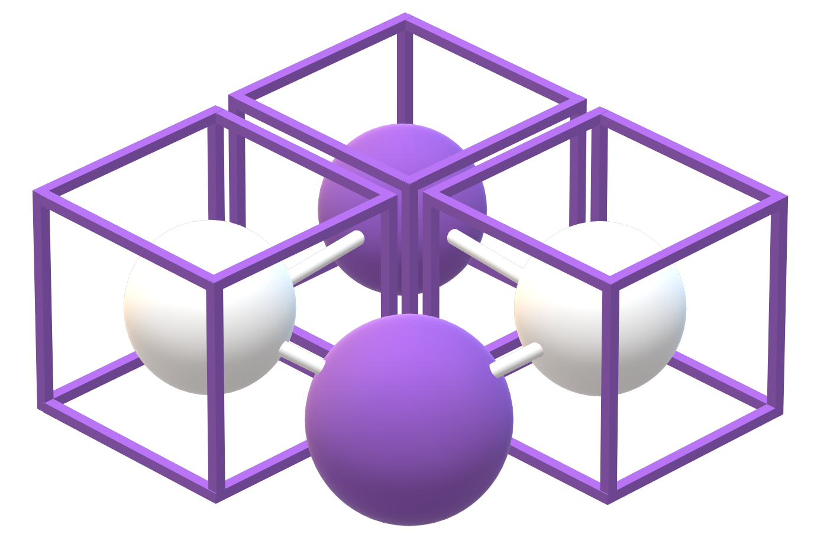

Fast, Reliable and AI-Powered
NFTs data for your dApp.

Connecting Blockchain World with the Real One.
Smart Contracts & Chainlink
When two parties want to reach a certain agreement, they can run into several difficulties: a defaulting party or the cost and the presence of an intermediary. The smart contract is a perfect way to overcome these problems. If we assume that two parties enter into a smart contract, it will be permanently deposited on the blockchain, without any kind of intermediary. If the event for which it was scheduled occurs, it will perform a series of pre-established functions by the two parties. The field of application of this concept is very broad, ranging from insurance to finance.
So Smart Contracts are essentially blocks of conditionally and automatically executing code stored in the Blockchain. They may have conditions that are triggered automatically when a certain value or event is reached. The data that arises from this event can be on-chain (occurs within the blockchain) or off-chain (occurs in the external world). Since smart contracts by their nature are not able to read off-chain data, they need an intermediary who is able to acquire the data from the outside world and translate it into a language understandable by smart contracts.
ChainLink comes has exactly this role. It's is a decentralized network of nodes that provide data and information from off-blockchain sources to on-blockchain smart contracts via oracles.
Real World Data -> ChainLink Oracle -> Smart Contract -> Execution
NFTs
We all know that a Blockchain is essentially a ledger in which informations are permanently stored. Transitions on Blockchains that we all know (like Bitcoin or Ethereum) are governed by the presence of a currency that allows you to pay transition fees or reward miners. Within these complex eco-systems it is possible to find Smart Contracts that represent Tokens, i.e. Coins that do not have their own Blockchains but use others to be used and exchanged.
A particular type of Token are the NFTs, acronym of Not Fungible Token. Unlike traditional tokens, these types of tokens are unique and cannot be exchanged with each other.
The concept behind these tokens has huge applications in real life: an NFT can be a work of art, a photograph or a property. This technology would allow to univocally assign the ownership of this tokenizable object to an entity in a safe, effective and fast way.
The current trend sees NFTs used to tokenize artworks, luxury goods and characters to be used within metaverses. However, the use cases of NFTs do not end there: soon they will also be used in DeFi protocols, as a collateral or as fractionalized items (and many other purposes). The introduction of NFTs in DeFi ecosystem, in cryptoassets-tracking dApps or in statements of particular smart contracts, will soon make it important to have all kind of available data related to NFTs. Here starts the role of Astrid.


Some pieces of Bored Ape. One of the most famous NFTs Collection.
Astrid
Our awareness of a demand for NFT-related data that will grow over time has made us question which types of data may be the most requested by developers. Comparing with some Smart Contracts experts, we have identified these three important areas:
●NFTs Collection-We will return any data you may need about the NFT collections. From the features of the collection to market data. All in one place.
●Single NFT Asset-Also in this case we will return all the data you need related to the single asset. Its Rarity Score, its market data and its features will be at your disposal.
●NFT Price Estimation-Our diamond. A Machine Learning algorithm will consider over 15 variables to determine the current estimate of an NFT with an accuracy never seen before. Initially the service will be offered for the first 100 collections, then we will extend it to all the others.
If you want to learn more about data that Astrid offers, we recommend that you access our Documentation.